1 Grammars for Data and Graphs
“The trouble with programmers is that you can never tell what a programmer is doing until it’s too late.” — Seymour Cray
1.1 A Grammar for Data
So far we’ve done things on data stored as vectors. But we often import data as data frames so we need to know how to manipulate data frames in a logical and friendly way.
The functions in the {dplyr} package (Wickham et al. (2020)) as part of the {tidyverse} set of packages simplify data munging tasks. But they work only on data frames.
The function names are verbs so they are easy to remember. Verbs help us to translate our thoughts into code. Recall, functions from packages are made available to the current session with the library() function.
## ── Attaching packages ─────────────────────────────────────────────── tidyverse 1.3.0 ──## ✓ ggplot2 3.3.0 ✓ purrr 0.3.4
## ✓ tibble 3.0.1 ✓ dplyr 0.8.5
## ✓ tidyr 1.0.2 ✓ stringr 1.4.0
## ✓ readr 1.3.1 ✓ forcats 0.5.0## ── Conflicts ────────────────────────────────────────────────── tidyverse_conflicts() ──
## x dplyr::filter() masks stats::filter()
## x dplyr::lag() masks stats::lag()We will look at the verbs one at a time using the airquality data frame. The data frame contains air quality measurements taken in New York City between May and September 1973. (?airquality).
## [1] 153 6## Ozone Solar.R Wind Temp Month Day
## 1 41 190 7.4 67 5 1
## 2 36 118 8.0 72 5 2
## 3 12 149 12.6 74 5 3
## 4 18 313 11.5 62 5 4
## 5 NA NA 14.3 56 5 5
## 6 28 NA 14.9 66 5 6The columns include Ozone (ozone concentration in ppb), Solar.R (solar radiation in langleys), Wind (wind speed in mph), Temp (air temperature in degrees F), Month, and Day.
We get summary statistics on the values in each column with the summary() method.
## Ozone Solar.R Wind Temp
## Min. : 1.00 Min. : 7.0 Min. : 1.700 Min. :56.00
## 1st Qu.: 18.00 1st Qu.:115.8 1st Qu.: 7.400 1st Qu.:72.00
## Median : 31.50 Median :205.0 Median : 9.700 Median :79.00
## Mean : 42.13 Mean :185.9 Mean : 9.958 Mean :77.88
## 3rd Qu.: 63.25 3rd Qu.:258.8 3rd Qu.:11.500 3rd Qu.:85.00
## Max. :168.00 Max. :334.0 Max. :20.700 Max. :97.00
## NA's :37 NA's :7
## Month Day
## Min. :5.000 Min. : 1.0
## 1st Qu.:6.000 1st Qu.: 8.0
## Median :7.000 Median :16.0
## Mean :6.993 Mean :15.8
## 3rd Qu.:8.000 3rd Qu.:23.0
## Max. :9.000 Max. :31.0
## Note that columns that have missing values are tabulated. For example, there are 37 missing ozone measurements and 7 missing radiation meaurements.
Before we get started we need to talk about pipes and tibbles.
1.1.1 Pipes
Importantly for literate programming we can apply the summary() function using the pipe operator (%>%). The pipe operator is a function in the dplyr package.
## Ozone Solar.R Wind Temp
## Min. : 1.00 Min. : 7.0 Min. : 1.700 Min. :56.00
## 1st Qu.: 18.00 1st Qu.:115.8 1st Qu.: 7.400 1st Qu.:72.00
## Median : 31.50 Median :205.0 Median : 9.700 Median :79.00
## Mean : 42.13 Mean :185.9 Mean : 9.958 Mean :77.88
## 3rd Qu.: 63.25 3rd Qu.:258.8 3rd Qu.:11.500 3rd Qu.:85.00
## Max. :168.00 Max. :334.0 Max. :20.700 Max. :97.00
## NA's :37 NA's :7
## Month Day
## Min. :5.000 Min. : 1.0
## 1st Qu.:6.000 1st Qu.: 8.0
## Median :7.000 Median :16.0
## Mean :6.993 Mean :15.8
## 3rd Qu.:8.000 3rd Qu.:23.0
## Max. :9.000 Max. :31.0
## We read the pipe as THEN. “airquality data frame THEN summarize”.
The pipe operator allows us to string together a bunch of functions that when read makes it easy to understand what was done.
For example, suppose the object of my interest is called me. I could apply a function called wake_up() in two ways.
The second way involves a bit more typing but it is easier to read in a literal sense and thus easier to understand.
This becomes clear when stringing together functions. For example, what happens to the result of me after the function wake_up() has been applied? How about get_out_of_bed() and the get_dressed()?
Again, I can apply these functions in two ways.
The order of the functions usually matters to the outcome.
Note that I create format that makes it easy to read. Each line is gets only one verb and each line ends with the pipe.
Continuing
me %>%
wake_up() %>%
get_out_of_bed() %>%
get_dressed() %>%
make_coffee() %>%
drink_coffee() %>%
leave_house()Which is much better in terms of ‘readability’ then leave_house(drink_coffee(make_coffee(get_dressed(get_out_of_bed(wake_up(me)))))).
1.1.2 Tibbles
Tibbles are data frames that make life a little easier. R is an old language, and some things that were useful 10 or 20 years ago now get in your way. To make a data frame a tibble (tabular data frame) use the as_tibble() function.
## [1] "data.frame"## [1] "tbl_df" "tbl" "data.frame"Click on airquality in the environment. It is a data frame. We will use the terms ‘tibble’ and ‘data frame’ interchangeably (mostly).
Now we are ready to look at some of the commonly used verbs and how to apply them to the data frame airquality.
1.1.3 Select
The function select() chooses variables by name. For example, choose the month, day, and temperature columns.
## # A tibble: 153 x 3
## Month Day Temp
## <int> <int> <int>
## 1 5 1 67
## 2 5 2 72
## 3 5 3 74
## 4 5 4 62
## 5 5 5 56
## 6 5 6 66
## 7 5 7 65
## 8 5 8 59
## 9 5 9 61
## 10 5 10 69
## # … with 143 more rowsSuppose we want a new data frame with only the temperature and ozone concentrations.
## # A tibble: 153 x 2
## Temp Ozone
## <int> <int>
## 1 67 41
## 2 72 36
## 3 74 12
## 4 62 18
## 5 56 NA
## 6 66 28
## 7 65 23
## 8 59 19
## 9 61 8
## 10 69 NA
## # … with 143 more rowsWe include an assignment operator (<-, left pointing arrow) and an object name (here df).
Note: The result of applying a dplyr verb is a data frame. From a data frame object to a data frame object.
1.1.4 Filter
The function filter() chooses observations based on specific values. Suppose we want only the observations where the temperature is at or above 80F.
## # A tibble: 73 x 6
## Ozone Solar.R Wind Temp Month Day
## <int> <int> <dbl> <int> <int> <int>
## 1 45 252 14.9 81 5 29
## 2 NA 186 9.2 84 6 4
## 3 NA 220 8.6 85 6 5
## 4 29 127 9.7 82 6 7
## 5 NA 273 6.9 87 6 8
## 6 71 291 13.8 90 6 9
## 7 39 323 11.5 87 6 10
## 8 NA 259 10.9 93 6 11
## 9 NA 250 9.2 92 6 12
## 10 23 148 8 82 6 13
## # … with 63 more rowsThe result is a data frame with the same 6 columns but now only 73 observations. Each of the observations has a temperature of at least 80F.
Suppose we want a new data frame keeping only observations where temperature is at least 80F AND winds less than 5 mph.
## # A tibble: 8 x 6
## Ozone Solar.R Wind Temp Month Day
## <int> <int> <dbl> <int> <int> <int>
## 1 135 269 4.1 84 7 1
## 2 64 175 4.6 83 7 5
## 3 66 NA 4.6 87 8 6
## 4 122 255 4 89 8 7
## 5 168 238 3.4 81 8 25
## 6 118 225 2.3 94 8 29
## 7 73 183 2.8 93 9 3
## 8 91 189 4.6 93 9 41.1.5 Arrange
The function arrange() orders the rows by values given in a particular column.
## # A tibble: 153 x 6
## Ozone Solar.R Wind Temp Month Day
## <int> <int> <dbl> <int> <int> <int>
## 1 16 7 6.9 74 7 21
## 2 1 8 9.7 59 5 21
## 3 23 13 12 67 5 28
## 4 23 14 9.2 71 9 22
## 5 8 19 20.1 61 5 9
## 6 14 20 16.6 63 9 25
## 7 9 24 13.8 81 8 2
## 8 9 24 10.9 71 9 14
## 9 4 25 9.7 61 5 23
## 10 13 27 10.3 76 9 18
## # … with 143 more rowsThe ordering is from lowest value of radiation to highest value. Here we see the first 10 rows. Note Month and Day are no longer chronological.
Repeat but order by the value of air temperature.
## # A tibble: 153 x 6
## Ozone Solar.R Wind Temp Month Day
## <int> <int> <dbl> <int> <int> <int>
## 1 NA NA 14.3 56 5 5
## 2 6 78 18.4 57 5 18
## 3 NA 66 16.6 57 5 25
## 4 NA NA 8 57 5 27
## 5 18 65 13.2 58 5 15
## 6 NA 266 14.9 58 5 26
## 7 19 99 13.8 59 5 8
## 8 1 8 9.7 59 5 21
## 9 8 19 20.1 61 5 9
## 10 4 25 9.7 61 5 23
## # … with 143 more rowsImportantly we can string the functions together. For example select the variables radiation, wind, and temperature then filter by temperatures above 90F and arrange by temperature.
## # A tibble: 14 x 3
## Solar.R Wind Temp
## <int> <dbl> <int>
## 1 291 14.9 91
## 2 167 6.9 91
## 3 250 9.2 92
## 4 267 6.3 92
## 5 272 5.7 92
## 6 222 8.6 92
## 7 197 5.1 92
## 8 259 10.9 93
## 9 183 2.8 93
## 10 189 4.6 93
## 11 225 2.3 94
## 12 188 6.3 94
## 13 237 6.3 96
## 14 203 9.7 97The result is a data frame with three columns and 14 rows arranged by increasing temperatures above 90F.
1.1.6 Mutate
The mutate() function adds new columns to the data frame. For example, create a new column called TempC as the temperature in degrees Celcius. Also create a column called WindMS as the wind speed in meters per second.
## # A tibble: 153 x 8
## Ozone Solar.R Wind Temp Month Day TempC WindMS
## <int> <int> <dbl> <int> <int> <int> <dbl> <dbl>
## 1 41 190 7.4 67 5 1 19.4 3.31
## 2 36 118 8 72 5 2 22.2 3.58
## 3 12 149 12.6 74 5 3 23.3 5.63
## 4 18 313 11.5 62 5 4 16.7 5.14
## 5 NA NA 14.3 56 5 5 13.3 6.39
## 6 28 NA 14.9 66 5 6 18.9 6.66
## 7 23 299 8.6 65 5 7 18.3 3.84
## 8 19 99 13.8 59 5 8 15 6.17
## 9 8 19 20.1 61 5 9 16.1 8.99
## 10 NA 194 8.6 69 5 10 20.6 3.84
## # … with 143 more rowsThe resulting data frame has 8 columns (two new ones) labeled TempC and WindMS.
On days when the temperature is below 60 F add a column giving the apparent temperature based on the cooling effect of the wind (wind chill) and then arrange from coldest to warmest apparent temperature.
airquality %>%
filter(Temp < 60) %>%
mutate(TempAp = 35.74 + .6215 * Temp - 35.75 * Wind^.16 + .4275 * Temp * Wind^.16) %>%
arrange(TempAp)## # A tibble: 8 x 7
## Ozone Solar.R Wind Temp Month Day TempAp
## <int> <int> <dbl> <int> <int> <int> <dbl>
## 1 NA NA 14.3 56 5 5 52.5
## 2 6 78 18.4 57 5 18 53.0
## 3 NA 66 16.6 57 5 25 53.3
## 4 NA 266 14.9 58 5 26 54.9
## 5 18 65 13.2 58 5 15 55.2
## 6 NA NA 8 57 5 27 55.3
## 7 19 99 13.8 59 5 8 56.4
## 8 1 8 9.7 59 5 21 57.31.1.7 Summarize
The summarize() function reduces (flattens) the data frame based on a function that computes a statistic. For example, to compute the average wind speed during July type
## # A tibble: 1 x 1
## Wavg
## <dbl>
## 1 8.94## # A tibble: 1 x 1
## Tavg
## <dbl>
## 1 79.1We’ve seen functions that compute statistics including sum(), sd(), min(), max(), var(), range(), median(). Others include
| Summary function | Description |
|---|---|
n() |
Length of the column |
first() |
First value of the column |
last() |
Last value of the column |
n_distinct() |
Number of distinct values |
Find the maximum and median wind speed and maximum ozone concentration values during the month of May. Also determine the number of observations during May.
airquality %>%
filter(Month == 5) %>%
summarize(Wmax = max(Wind),
Wmed = median(Wind),
OzoneMax = max(Ozone),
NumDays = n())## # A tibble: 1 x 4
## Wmax Wmed OzoneMax NumDays
## <dbl> <dbl> <dbl> <int>
## 1 20.1 11.5 NA 31Why do we get an NA for OzoneMax? How would you fix this?
airquality %>%
filter(Month == 5) %>%
summarize(Wmax = max(Wind),
Wmed = median(Wind),
OzoneMax = max(Ozone, na.rm = TRUE),
NumDays = n())## # A tibble: 1 x 4
## Wmax Wmed OzoneMax NumDays
## <dbl> <dbl> <int> <int>
## 1 20.1 11.5 115 311.1.8 Group
If we want to summarize separately for each month we use the group_by() function. We split the data frame by some variable (e.g., Month), apply a function to the individual data frames, and then combine the output.
Find the highest ozone concentration by month. Include the number of observations (days) in the month.
## # A tibble: 5 x 3
## Month OzoneMax NumDays
## <int> <int> <int>
## 1 5 115 31
## 2 6 71 30
## 3 7 135 31
## 4 8 168 31
## 5 9 96 30Find the average ozone concentration when temperatures are above and below 70 F. Include the number of observations (days) in the two groups.
airquality %>%
group_by(Temp >= 70) %>%
summarize(OzoneAvg = mean(Ozone, na.rm = TRUE),
NumDays = n())## # A tibble: 2 x 3
## `Temp >= 70` OzoneAvg NumDays
## <lgl> <dbl> <int>
## 1 FALSE 18.0 32
## 2 TRUE 49.1 121On average ozone concentration is higher on warm days (Temp >= 70 F) days. Said another way; mean ozone concentration statistically depends on temperature.
The mean is a model for the data. The statistical dependency of the mean implies that a model for ozone concentration will likely be improved by including temperature as an explanatory variable.
The important dplyr verbs are
| Verb | Description |
|---|---|
select() |
selects columns; pick variables by their names |
filter() |
filters rows; pick observations by their values |
arrange() |
re-orders the rows |
mutate() |
creates new columns; create new variables with functions of existing variables |
summarize() |
summarizes values; collapse many values down to a single summary |
group_by() |
allows operations to be grouped |
The syntax of the verb functions in the dplyr package are all the same:
Properties
* The first argument is a data frame. This argument is implicit when using the %>% operator.
* The subsequent arguments describe what to do with the data frame. We refer to columns in the data frame directly (without using $).
* The result is a new data frame
These properties make it easy to chain together many simple lines of code to do something complex.
The five functions form the basis of a grammar for data. At the most basic level, we can only alter a data frame in five useful ways: we can reorder the rows (arrange()), pick observations and variables of interest (filter() and select()), add new variables that are functions of existing variables (mutate()), or collapse many values to a summary (summarise()).
1.1.9 Give it a try: Florida precipitation (http://myweb.fsu.edu/jelsner/temp/data/FLprecip.txt)
Suppose we are interested in whether it is getting wetter or drier in Florida during spring? One way to examine this question is to divide the years into two groups early and late and compute averages.
Import the data, select the month of April (Apr) and year (Year), group by years > 1960, summarize the two groups of April rainfall with the mean and variance. Make the code work by filling in the blanks (’___’).
1.1.10 Another example: US tornadoes
Let’s review by considering another data frame. The file Torn.sf is a data frame. The last column contains the geometry (genesis as a POINT) of the tornadoes in the format of well-known text WKT making it a ‘simple feature’ data frame.
Note the column named date is a character vector in the format year-month-day.
## Linking to GEOS 3.7.2, GDAL 2.4.2, PROJ 5.2.0## [1] "1950-01-03" "1950-01-03" "1950-01-03" "1950-01-13" "1950-01-25"
## [6] "1950-01-25"1.1.10.1 Create new columns with the verb function mutate()
New columns are created with the mutate() function. Here we assign to the object sfdf the original data frame but with three new columns.
Dateas an actual calendar date with theas.Date()function,Lengthas the damage path length in meters andWidthas the damage path width in meters.
sfdf <- Torn.sf %>%
mutate(Date = as.Date(date),
Length = len * 1609.34,
Width = wid * .9144) %>%
glimpse()## Rows: 63,645
## Columns: 26
## $ om <dbl> 1, 2, 3, 4, 5, 6, 7, 8, 9, 10, 11, 12, 13, 14, 15, 16, 17, 1…
## $ yr <dbl> 1950, 1950, 1950, 1950, 1950, 1950, 1950, 1950, 1950, 1950, …
## $ mo <dbl> 1, 1, 1, 1, 1, 1, 1, 2, 2, 2, 2, 2, 2, 2, 2, 2, 2, 2, 2, 2, …
## $ dy <dbl> 3, 3, 3, 13, 25, 25, 26, 11, 11, 11, 11, 12, 12, 12, 12, 12,…
## $ date <chr> "1950-01-03", "1950-01-03", "1950-01-03", "1950-01-13", "195…
## $ time <chr> "11:00:00", "11:55:00", "16:00:00", "05:25:00", "19:30:00", …
## $ tz <dbl> 3, 3, 3, 3, 3, 3, 3, 3, 3, 3, 3, 3, 3, 3, 3, 3, 3, 3, 3, 3, …
## $ st <chr> "MO", "IL", "OH", "AR", "MO", "IL", "TX", "TX", "TX", "TX", …
## $ stf <dbl> 29, 17, 39, 5, 29, 17, 48, 48, 48, 48, 48, 48, 48, 48, 48, 2…
## $ stn <dbl> 1, 2, 1, 1, 2, 3, 1, 2, 3, 4, 5, 6, 7, 8, 9, 1, 2, 10, 2, 1,…
## $ mag <dbl> 3, 3, 1, 3, 2, 2, 2, 2, 3, 2, 2, 2, 1, 2, 1, 2, 1, 3, 2, 4, …
## $ inj <dbl> 3, 3, 1, 1, 5, 0, 2, 0, 12, 5, 6, 8, 0, 0, 32, 2, 0, 15, 0, …
## $ fat <dbl> 0, 0, 0, 1, 0, 0, 0, 0, 1, 0, 0, 1, 0, 0, 0, 3, 0, 3, 0, 18,…
## $ loss <dbl> 6, 5, 4, 3, 5, 5, 0, 4, 4, 5, 5, 4, 4, 4, 5, 4, 0, 5, 3, 5, …
## $ closs <dbl> 0, 0, 0, 0, 0, 0, 0, 0, 0, 0, 0, 0, 0, 0, 0, 0, 0, 0, 0, 0, …
## $ slat <dbl> 38.77, 39.10, 40.88, 34.40, 37.60, 41.17, 26.88, 29.42, 29.6…
## $ slon <dbl> -90.22, -89.30, -84.58, -94.37, -90.68, -87.33, -98.12, -95.…
## $ elat <dbl> 38.8300, 39.1200, 40.8801, 34.4001, 37.6300, 41.1701, 26.880…
## $ elon <dbl> -90.0300, -89.2300, -84.5799, -94.3699, -90.6500, -87.3299, …
## $ len <dbl> 9.5, 3.6, 0.1, 0.6, 2.3, 0.1, 4.7, 9.9, 12.0, 4.6, 4.5, 8.0,…
## $ wid <dbl> 150, 130, 10, 17, 300, 100, 133, 400, 1000, 100, 67, 833, 23…
## $ fc <dbl> 0, 0, 0, 0, 0, 0, 0, 0, 0, 0, 0, 0, 0, 0, 0, 0, 0, 0, 0, 0, …
## $ geometry <POINT [°]> POINT (-90.22 38.77), POINT (-89.3 39.1), POINT (-84.5…
## $ Date <date> 1950-01-03, 1950-01-03, 1950-01-03, 1950-01-13, 1950-01-25,…
## $ Length <dbl> 15288.730, 5793.624, 160.934, 965.604, 3701.482, 160.934, 75…
## $ Width <dbl> 137.1600, 118.8720, 9.1440, 15.5448, 274.3200, 91.4400, 121.…The simple feature data frame sfdf has the same columns as the original data frame but it now includes the columns Date, Length, and Width. The three new columns are placed in the data frame.
Note here the function glimpse() has no arguments. It inherits the data frame sfdf through the piping operator.
1.1.10.2 Rename a column with rename().
To give a column a new name use the rename() function (new name = old name). For example to change the name of the column yr to Year and mag to EF type
## Rows: 63,645
## Columns: 26
## $ om <dbl> 1, 2, 3, 4, 5, 6, 7, 8, 9, 10, 11, 12, 13, 14, 15, 16, 17, 1…
## $ Year <dbl> 1950, 1950, 1950, 1950, 1950, 1950, 1950, 1950, 1950, 1950, …
## $ mo <dbl> 1, 1, 1, 1, 1, 1, 1, 2, 2, 2, 2, 2, 2, 2, 2, 2, 2, 2, 2, 2, …
## $ dy <dbl> 3, 3, 3, 13, 25, 25, 26, 11, 11, 11, 11, 12, 12, 12, 12, 12,…
## $ date <chr> "1950-01-03", "1950-01-03", "1950-01-03", "1950-01-13", "195…
## $ time <chr> "11:00:00", "11:55:00", "16:00:00", "05:25:00", "19:30:00", …
## $ tz <dbl> 3, 3, 3, 3, 3, 3, 3, 3, 3, 3, 3, 3, 3, 3, 3, 3, 3, 3, 3, 3, …
## $ st <chr> "MO", "IL", "OH", "AR", "MO", "IL", "TX", "TX", "TX", "TX", …
## $ stf <dbl> 29, 17, 39, 5, 29, 17, 48, 48, 48, 48, 48, 48, 48, 48, 48, 2…
## $ stn <dbl> 1, 2, 1, 1, 2, 3, 1, 2, 3, 4, 5, 6, 7, 8, 9, 1, 2, 10, 2, 1,…
## $ EF <dbl> 3, 3, 1, 3, 2, 2, 2, 2, 3, 2, 2, 2, 1, 2, 1, 2, 1, 3, 2, 4, …
## $ inj <dbl> 3, 3, 1, 1, 5, 0, 2, 0, 12, 5, 6, 8, 0, 0, 32, 2, 0, 15, 0, …
## $ fat <dbl> 0, 0, 0, 1, 0, 0, 0, 0, 1, 0, 0, 1, 0, 0, 0, 3, 0, 3, 0, 18,…
## $ loss <dbl> 6, 5, 4, 3, 5, 5, 0, 4, 4, 5, 5, 4, 4, 4, 5, 4, 0, 5, 3, 5, …
## $ closs <dbl> 0, 0, 0, 0, 0, 0, 0, 0, 0, 0, 0, 0, 0, 0, 0, 0, 0, 0, 0, 0, …
## $ slat <dbl> 38.77, 39.10, 40.88, 34.40, 37.60, 41.17, 26.88, 29.42, 29.6…
## $ slon <dbl> -90.22, -89.30, -84.58, -94.37, -90.68, -87.33, -98.12, -95.…
## $ elat <dbl> 38.8300, 39.1200, 40.8801, 34.4001, 37.6300, 41.1701, 26.880…
## $ elon <dbl> -90.0300, -89.2300, -84.5799, -94.3699, -90.6500, -87.3299, …
## $ len <dbl> 9.5, 3.6, 0.1, 0.6, 2.3, 0.1, 4.7, 9.9, 12.0, 4.6, 4.5, 8.0,…
## $ wid <dbl> 150, 130, 10, 17, 300, 100, 133, 400, 1000, 100, 67, 833, 23…
## $ fc <dbl> 0, 0, 0, 0, 0, 0, 0, 0, 0, 0, 0, 0, 0, 0, 0, 0, 0, 0, 0, 0, …
## $ geometry <POINT [°]> POINT (-90.22 38.77), POINT (-89.3 39.1), POINT (-84.5…
## $ Date <date> 1950-01-03, 1950-01-03, 1950-01-03, 1950-01-13, 1950-01-25,…
## $ Length <dbl> 15288.730, 5793.624, 160.934, 965.604, 3701.482, 160.934, 75…
## $ Width <dbl> 137.1600, 118.8720, 9.1440, 15.5448, 274.3200, 91.4400, 121.…The original names of yr and mag are replaced with Year and EF.
1.1.10.3 Select columns with select()
The select() function chooses specified columns by name to create a new data frame. Here we recycle the sfdf name.
sfdf <- sfdf %>%
select(Year,
Month = mo,
ST = st,
EF,
Date,
Length,
Width,
Fatalities = fat,
Injuries = inj)
glimpse(sfdf)## Rows: 63,645
## Columns: 10
## $ Year <dbl> 1950, 1950, 1950, 1950, 1950, 1950, 1950, 1950, 1950, 1950…
## $ Month <dbl> 1, 1, 1, 1, 1, 1, 1, 2, 2, 2, 2, 2, 2, 2, 2, 2, 2, 2, 2, 2…
## $ ST <chr> "MO", "IL", "OH", "AR", "MO", "IL", "TX", "TX", "TX", "TX"…
## $ EF <dbl> 3, 3, 1, 3, 2, 2, 2, 2, 3, 2, 2, 2, 1, 2, 1, 2, 1, 3, 2, 4…
## $ Date <date> 1950-01-03, 1950-01-03, 1950-01-03, 1950-01-13, 1950-01-2…
## $ Length <dbl> 15288.730, 5793.624, 160.934, 965.604, 3701.482, 160.934, …
## $ Width <dbl> 137.1600, 118.8720, 9.1440, 15.5448, 274.3200, 91.4400, 12…
## $ Fatalities <dbl> 0, 0, 0, 1, 0, 0, 0, 0, 1, 0, 0, 1, 0, 0, 0, 3, 0, 3, 0, 1…
## $ Injuries <dbl> 3, 3, 1, 1, 5, 0, 2, 0, 12, 5, 6, 8, 0, 0, 32, 2, 0, 15, 0…
## $ geometry <POINT [°]> POINT (-90.22 38.77), POINT (-89.3 39.1), POINT (-84…Note that we also change the name of the column when we use the = sign. For example Month = mo. mo is the original name of the column but it gets changed to Month.
The select() function is useful in focusing on a relatively few variables when the data set has many variables.
We can select columns having common character string names. For example, consider the us_states data frame from the spData package.
## Simple feature collection with 6 features and 6 fields
## geometry type: MULTIPOLYGON
## dimension: XY
## bbox: xmin: -114.8136 ymin: 24.55868 xmax: -71.78699 ymax: 42.04964
## CRS: EPSG:4269
## GEOID NAME REGION AREA total_pop_10 total_pop_15
## 1 01 Alabama South 133709.27 [km^2] 4712651 4830620
## 2 04 Arizona West 295281.25 [km^2] 6246816 6641928
## 3 08 Colorado West 269573.06 [km^2] 4887061 5278906
## 4 09 Connecticut Norteast 12976.59 [km^2] 3545837 3593222
## 5 12 Florida South 151052.01 [km^2] 18511620 19645772
## 6 13 Georgia South 152725.21 [km^2] 9468815 10006693
## geometry
## 1 MULTIPOLYGON (((-88.20006 3...
## 2 MULTIPOLYGON (((-114.7196 3...
## 3 MULTIPOLYGON (((-109.0501 4...
## 4 MULTIPOLYGON (((-73.48731 4...
## 5 MULTIPOLYGON (((-81.81169 2...
## 6 MULTIPOLYGON (((-85.60516 3...We note two columns contain population information total_pop_10 (population from 2010) and total_pop_15 (population from 2015).
Here we select columns containing only the population information. Since both start with the character string total we use the starts_with() function.
## Simple feature collection with 49 features and 2 fields
## geometry type: MULTIPOLYGON
## dimension: XY
## bbox: xmin: -124.7042 ymin: 24.55868 xmax: -66.9824 ymax: 49.38436
## CRS: EPSG:4269
## First 10 features:
## total_pop_10 total_pop_15 geometry
## 1 4712651 4830620 MULTIPOLYGON (((-88.20006 3...
## 2 6246816 6641928 MULTIPOLYGON (((-114.7196 3...
## 3 4887061 5278906 MULTIPOLYGON (((-109.0501 4...
## 4 3545837 3593222 MULTIPOLYGON (((-73.48731 4...
## 5 18511620 19645772 MULTIPOLYGON (((-81.81169 2...
## 6 9468815 10006693 MULTIPOLYGON (((-85.60516 3...
## 7 1526797 1616547 MULTIPOLYGON (((-116.916 45...
## 8 6417398 6568645 MULTIPOLYGON (((-87.52404 4...
## 9 2809329 2892987 MULTIPOLYGON (((-102.0517 4...
## 10 4429940 4625253 MULTIPOLYGON (((-92.01783 2...Note that the geometry column remains.
1.1.11 Filter rows with filter()
The filter() function selects a subset of the rows of a data frame. The arguments are filtering (subsetting) expressions evaluated using column names of the data frame. For example, we can select all tornadoes recorded during October of 1980.
## Simple feature collection with 43 features and 9 fields
## geometry type: POINT
## dimension: XY
## bbox: xmin: -105.22 ymin: 29.53 xmax: -77.03 ymax: 42.77
## CRS: 4326
## # A tibble: 43 x 10
## Year Month ST EF Date Length Width Fatalities Injuries
## * <dbl> <dbl> <chr> <dbl> <date> <dbl> <dbl> <dbl> <dbl>
## 1 1980 10 NC 1 1980-10-03 2414. 457. 0 0
## 2 1980 10 NE 2 1980-10-15 161. 70.4 0 0
## 3 1980 10 KS 0 1980-10-15 161. 9.14 0 0
## 4 1980 10 KS 0 1980-10-15 8208. 91.4 0 0
## 5 1980 10 CO 2 1980-10-15 2414. 45.7 0 0
## 6 1980 10 NE 1 1980-10-15 161. 24.7 0 0
## 7 1980 10 KS 3 1980-10-15 21404. 137. 0 4
## 8 1980 10 NE 0 1980-10-15 322. 24.7 0 0
## 9 1980 10 NE 0 1980-10-15 161. 27.4 0 0
## 10 1980 10 KS 3 1980-10-16 161. 9.14 0 0
## # … with 33 more rows, and 1 more variable: geometry <POINT [°]>Month and Year are column names in df that were created with the rename() and select() functions above.
Q: How would you create a new data frame containing only tornadoes originating in Wisconsin?
## Simple feature collection with 1380 features and 9 fields
## geometry type: POINT
## dimension: XY
## bbox: xmin: -92.78 ymin: 42.5 xmax: -87.17 ymax: 46.72
## CRS: 4326
## # A tibble: 1,380 x 10
## Year Month ST EF Date Length Width Fatalities Injuries
## * <dbl> <dbl> <chr> <dbl> <date> <dbl> <dbl> <dbl> <dbl>
## 1 1950 6 WI 1 1950-06-25 805. 9.14 0 0
## 2 1950 6 WI 2 1950-06-25 13518. 9.14 0 0
## 3 1950 6 WI 2 1950-06-25 12553. 15.5 1 0
## 4 1950 6 WI 4 1950-06-25 21082. 805. 2 12
## 5 1950 6 WI 3 1950-06-25 161. 274. 0 0
## 6 1951 6 WI 2 1951-06-19 1609. 427. 0 0
## 7 1951 7 WI 2 1951-07-03 805. 45.7 0 0
## 8 1951 9 WI 3 1951-09-12 39268. 183. 0 1
## 9 1951 9 WI 4 1951-09-26 42487. 91.4 6 3
## 10 1951 9 WI 4 1951-09-26 14484. 91.4 1 9
## # … with 1,370 more rows, and 1 more variable: geometry <POINT [°]>1.1.12 Arrange rows with arrange()
The function arrange() works like filter() except that instead of subsetting rows, it reorders them. It takes a data frame, and a set of column names (or more complicated expressions) to order by.
Here we use desc() together with arrange() to order a column by descending order of fatalities.
## Rows: 63,645
## Columns: 10
## $ Year <dbl> 2011, 1953, 1953, 1953, 1955, 2011, 2011, 1966, 1971, 1952…
## $ Month <dbl> 5, 6, 5, 6, 5, 4, 4, 3, 2, 3, 2, 5, 4, 3, 12, 4, 4, 5, 5, …
## $ ST <chr> "MO", "MI", "TX", "MA", "OK", "AL", "AL", "MS", "MS", "AR"…
## $ EF <dbl> 5, 5, 5, 4, 5, 5, 4, 5, 4, 4, 5, 5, 4, 4, 5, 4, 5, 5, 4, 4…
## $ Date <date> 2011-05-22, 1953-06-08, 1953-05-11, 1953-06-09, 1955-05-2…
## $ Length <dbl> 34793.93, 30416.53, 33635.21, 56165.97, 90766.78, 212432.8…
## $ Width <dbl> 1463.0400, 761.6952, 533.0952, 822.9600, 1207.0080, 2011.6…
## $ Fatalities <dbl> 158, 116, 114, 94, 80, 72, 64, 58, 58, 50, 47, 44, 42, 38,…
## $ Injuries <dbl> 1150, 844, 597, 1228, 273, 145, 1500, 518, 795, 325, 510, …
## $ geometry <POINT [°]> POINT (-94.5932 37.0524), POINT (-83.85 43.1), POINT…The deadliest tornado in the record occurred in 2011 killing 158 people many in the city of Joplin, MO.
Again, note here the glimpse() function has no arguments. It inherits the arranged data frame through the piping operator.
If we provide more than one column name, each additional column is used to break ties in the values of the preceding column.
## Rows: 63,645
## Columns: 10
## $ Year <dbl> 2011, 1953, 1953, 1953, 1955, 2011, 2011, 1971, 1966, 1952…
## $ Month <dbl> 5, 6, 5, 6, 5, 4, 4, 2, 3, 3, 2, 5, 4, 12, 3, 4, 5, 4, 5, …
## $ ST <chr> "MO", "MI", "TX", "MA", "OK", "AL", "AL", "MS", "MS", "AR"…
## $ EF <dbl> 5, 5, 5, 4, 5, 5, 4, 4, 5, 4, 5, 5, 4, 5, 4, 5, 5, 4, 4, 4…
## $ Date <date> 2011-05-22, 1953-06-08, 1953-05-11, 1953-06-09, 1955-05-2…
## $ Length <dbl> 34793.93, 30416.53, 33635.21, 56165.97, 90766.78, 212432.8…
## $ Width <dbl> 1463.0400, 761.6952, 533.0952, 822.9600, 1207.0080, 2011.6…
## $ Fatalities <dbl> 158, 116, 114, 94, 80, 72, 64, 58, 58, 50, 47, 44, 42, 38,…
## $ Injuries <dbl> 1150, 844, 597, 1228, 273, 145, 1500, 795, 518, 325, 510, …
## $ geometry <POINT [°]> POINT (-94.5932 37.0524), POINT (-83.85 43.1), POINT…1.1.13 Pull out a single variable with pull()
The function pull() pulls out a single variable from the data frame.
## [1] 0 0 0 1 0 0The result is a vector. This is equivalent to Fatals <- sfdf$Fatalities.
1.1.14 Summarize values with summarise()
The summarize() function collapses a data frame to a single row. Here we first create a regular data frame from the simple feature data frame by using the as.data.frame() function.
## mL mW
## 1 1126.538 45.72The above functions are similar: The first argument is a data frame. This is implicit when using %>%. The subsequent arguments describe what to do with it, and you refer to columns in the data frame directly without using $. The result is a new data frame (except when using pull()).
Together these properties make it easy to chain together multiple simple steps to achieve a complex result. They functions provide the grammar for a data manipulation language.
The remainder of the language comes from applying the five functions in various order and on various groups.
1.1.15 Grouped operations
The verb functions are powerful when we combine them with the idea of ‘group by’, repeating the operation individually on groups of observations within the data frame.
We use the group_by() function to describe how to break a data frame down into groups of rows. We can then use the resulting object in the exactly the same functions as above; they’ll automatically work ‘by group’ when the input is a grouped.
Of the five verbs summarize() is easy to understand and quite useful.
For example, here we filter the data frame for years starting with 2007 then group by EF rating before summarizing the path length and path width using the median() function.
df %>%
filter(Year >= 2007) %>%
group_by(EF) %>%
summarize(Count = n(),
mL = median(Length),
mW = median(Width))## # A tibble: 7 x 4
## EF Count mL mW
## <dbl> <int> <dbl> <dbl>
## 1 -9 111 853. 45.7
## 2 0 7951 869. 45.7
## 3 1 4649 4345. 101.
## 4 2 1237 9946. 274.
## 5 3 321 21243. 549.
## 6 4 71 34842. 805.
## 7 5 9 58950. 1609.The output is a table perhaps as part of exploratory analysis.
We use summarize() with aggregate functions, which take a vector of values, and return a single number. Functions in the base package like min(), max(), mean(), sum(), sd(), median(), and IQR() can be used. The dplyr packages has others:
n(): number of observations in the current group.n_distinct(): count the number of unique values.first(),last()andnth()- these work similarly tox[1],x[length(x)], andx[n]but give you more control of the result if the value isn’t present.
For example, we use these to find the number of tornadoes by state and the number of months in which there was at least one tornado.
## # A tibble: 52 x 3
## ST months nT
## <chr> <int> <int>
## 1 AK 3 4
## 2 AL 12 2143
## 3 AR 12 1809
## 4 AZ 12 250
## 5 CA 12 436
## 6 CO 9 2174
## 7 CT 7 104
## 8 DC 2 2
## 9 DE 10 61
## 10 FL 12 3381
## # … with 42 more rowsWhen we group by multiple variables, each summary peels off one level of the grouping. That makes it easy to progressively roll-up a dataset. As an example: how would we determine the number of tornadoes by day of year?
We first use the function day() from the lubridate package to extract the day of the month from a Date object and add it to our data frame. We then use group_by() on the month and day. Finally we s
##
## Attaching package: 'lubridate'## The following objects are masked from 'package:dplyr':
##
## intersect, setdiff, union## The following objects are masked from 'package:base':
##
## date, intersect, setdiff, union## # A tibble: 366 x 3
## # Groups: Month [12]
## Month Day nT
## <dbl> <int> <int>
## 1 1 1 28
## 2 1 2 89
## 3 1 3 51
## 4 1 4 26
## 5 1 5 36
## 6 1 6 26
## 7 1 7 80
## 8 1 8 47
## 9 1 9 33
## 10 1 10 72
## # … with 356 more rowsThe result is a data frame with the number of tornadoes by day of the year.
There are functions that combine some of the primitives. For example, we can use tally() instead of summarize(nT = n()) or count() instead of both group_by() and summarize(). For example, the following code does the same thing.
## # A tibble: 366 x 3
## Month Day n
## <dbl> <int> <int>
## 1 1 1 28
## 2 1 2 89
## 3 1 3 51
## 4 1 4 26
## 5 1 5 36
## 6 1 6 26
## 7 1 7 80
## 8 1 8 47
## 9 1 9 33
## 10 1 10 72
## # … with 356 more rowsQ: What state had the most tornado fatalities?
## # A tibble: 52 x 2
## ST nF
## <chr> <dbl>
## 1 AL 628
## 2 TX 584
## 3 MS 461
## 4 OK 432
## 5 AR 392
## 6 MO 346
## 7 TN 325
## 8 IN 268
## 9 OH 225
## 10 GA 219
## # … with 42 more rows1.2 A Grammar for Graphs
“Hell isn’t other people’s code. Hell is your own code from 3 years ago.” — Jeff Atwood’
The last lesson introduced the functions from the dplyr package for manipulating data frames in a grammatically consistent way. This makes data munging easier. The piping operator allows you to write code that is legible. This lesson introduces a grammar for making graphs.
Some of this material is taken from Sharp Sight Labs.
The package ggplot2 and dplyr are part of tidyverse, which is a group of packages for data manipulation and visualization. A recent 2016 survey by O’Reilly media showed that ggplot2 is the most frequently used data visualization tool among employed data scientists. It’s popular because it teaches you how to think about visualizing your data. There are a few principles underlying the syntax.
- Mapping data to aesthetics
- Layering
- Building plots iteratively
We make the functions available to our currenct working directory by typing
1.2.1 Principle 1: Map data to aesthetics
Consider the following vectors of data. Create a data frame df2 using the data.frame function.
foo <- c(-122.419416,-121.886329,-71.05888,-74.005941,-118.243685,-117.161084,-0.127758,-77.036871,
116.407395,-122.332071,-87.629798,-79.383184,-97.743061,121.473701,72.877656,2.352222,
77.594563,-75.165222,-112.074037,37.6173)
bar <- c(37.77493,37.338208,42.360083,40.712784,34.052234,32.715738,51.507351,38.907192,39.904211,
47.60621,41.878114,43.653226,30.267153,31.230416,19.075984,48.856614,12.971599,39.952584,33.448377,55.755826)
zaz <- c(6471,4175,3144,2106,1450,1410,842,835,758,727,688,628,626,510,497,449,419,413,325,318)
df2 <- data.frame(foo, bar, zaz)
glimpse(df2)## Rows: 20
## Columns: 3
## $ foo <dbl> -122.419416, -121.886329, -71.058880, -74.005941, -118.243685, -1…
## $ bar <dbl> 37.77493, 37.33821, 42.36008, 40.71278, 34.05223, 32.71574, 51.50…
## $ zaz <dbl> 6471, 4175, 3144, 2106, 1450, 1410, 842, 835, 758, 727, 688, 628,…## foo bar zaz
## 1 -122.41942 37.77493 6471
## 2 -121.88633 37.33821 4175
## 3 -71.05888 42.36008 3144
## 4 -74.00594 40.71278 2106
## 5 -118.24368 34.05223 1450
## 6 -117.16108 32.71574 1410To make a scatter plot specify the data frame as the first argument in the ggplot() function and the aes() function as the second argument. The arguments of the aes() function are the x and y positions as foo and bar, respectively. The plot is rendered after adding the geometric object geom_point() as a layer.
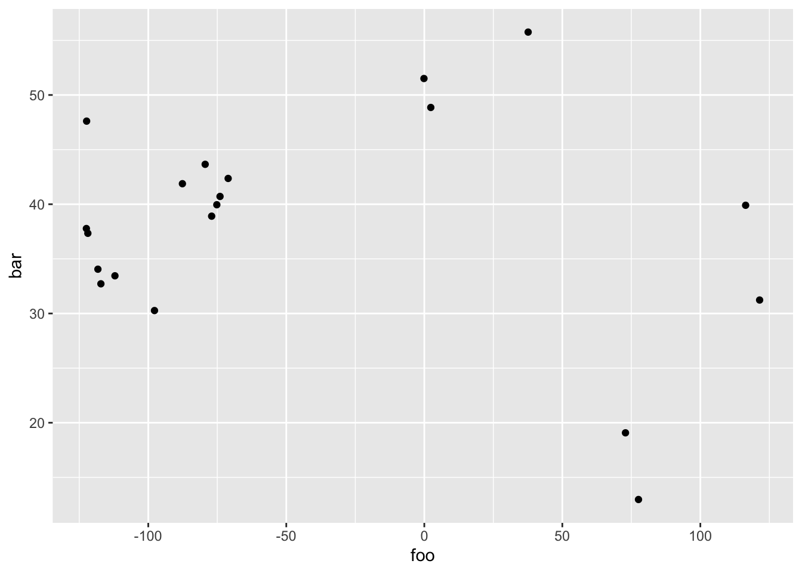
We are mapping data to aesthetic attributes. The points in the scatter plot are geometric objects that we draw. In ggplot2 lingo, the points are geoms. More specifically the points are point geoms that we denote syntactically with the function geom_point().
All geometric objects have aesthetic attributes. Things like:
- x-position
- y-position
- color
- size
- transparency
When we create a data visualization in ggplot2, we are creating a mapping between variables in our data and the aesthetic attributes of the geometric objects in our visualization. When we visualize data, we are mapping between variables in our data frame and the aesthetic attributes of the geometric objects in the plot.
In our scatter plot example, when we create this plot, we’re mapping foo to the x-position aesthetic and we’re mapping bar to the y-position aesthetic. This may seem trivial foo is the x-axis and bar is on the y-axis. We can do that in Excel.
But here there is a deeper structure. Theoretically, geometric objects (i.e., the things we draw in a plot, like points) don’t just have attributes like position. They have a color, size, etc.
For example here we map a new variable to the size aesthetic.
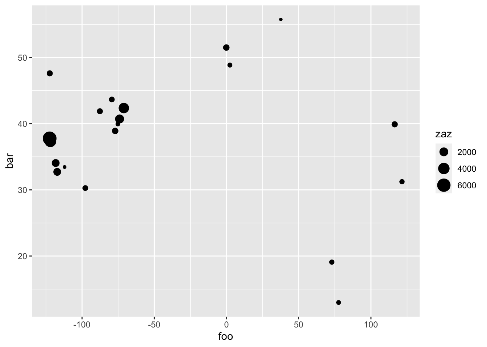
We changed a scatter plot to a bubble chart by mapping a new variable to the size aesthetic. Any visualization we see can be deconstructed into geom specifications and mapping from data to the aesthetic attributes of the geometric objects.
1.2.2 Principle 2: Build plots in layers
The principle of layering is important because to create more advanced visualizations, we often need to:
- Plot multiple datasets, or
- Plot a dataset with additional contextual information contained in a second dataset, or
- Plot summaries or statistical transformations over the raw data
Let’s modify the bubble chart by getting additional data and plotting it as a new layer below the bubbles. First get the data from the maps package and store it in a new data frame.
##
## Attaching package: 'maps'## The following object is masked from 'package:purrr':
##
## map## Rows: 99,338
## Columns: 6
## $ long <dbl> -69.89912, -69.89571, -69.94219, -70.00415, -70.06612, -70.…
## $ lat <dbl> 12.45200, 12.42300, 12.43853, 12.50049, 12.54697, 12.59707,…
## $ group <dbl> 1, 1, 1, 1, 1, 1, 1, 1, 1, 1, 2, 2, 2, 2, 2, 2, 2, 2, 2, 2,…
## $ order <int> 1, 2, 3, 4, 5, 6, 7, 8, 9, 10, 12, 13, 14, 15, 16, 17, 18, …
## $ region <chr> "Aruba", "Aruba", "Aruba", "Aruba", "Aruba", "Aruba", "Arub…
## $ subregion <chr> NA, NA, NA, NA, NA, NA, NA, NA, NA, NA, NA, NA, NA, NA, NA,…Plot the new data as a new layer underneath the bubbles.
ggplot(data = df2, aes(x = foo, y = bar)) +
geom_polygon(data = df3, aes(x = long, y = lat, group = group)) +
geom_point(aes(size = zaz), color = "red")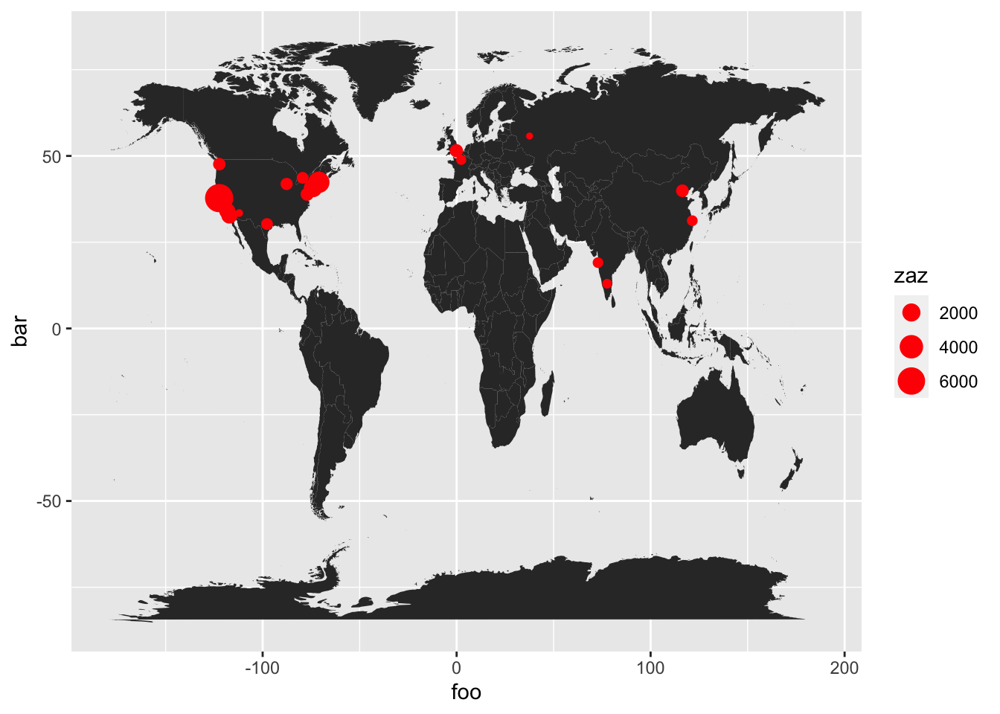
This is the bubble chart from earlier in the post with a new layer added. We transformed a bubble chart into a new visualization called a “dot distribution map,” which is much more insightful and much more visually interesting.
The bubble chart is a modified scatter plot and the dot distribution map is a modified bubble chart.
We used two of the data visualization principles (mapping & layering) to build this visualization:
- To create the scatter plot, we mapped
footo the x-aesthetic and mappedbarto the y-aesthetic - To create the bubble chart, we mapped a
zazto the size-aesthetic - To create the dot distribution map, we added a layer of polygon data under the bubbles.
1.2.3 Principle 3: Iteration
The third principle is about process. The process begins with mapping and layering but ends with iteration when we add layers that modify scales, legends, colors, etc. The syntax of ggplot layerability enables and rewards iteration.
Let’s assign to p1 the output of our plot.
p1 <- ggplot(data = df2,
mapping = aes(x = foo, y = bar)) +
geom_polygon(data = df3,
mapping = aes(x = long, y = lat, group = group)) +
geom_point(aes(size = zaz), color = "red")p2 <- p1 + xlab("Longitude") + ylab("Latitude")
p2 <- p2 + scale_size_continuous(name = "Venture Capital Investment\n(USD, Millions)\n")
p2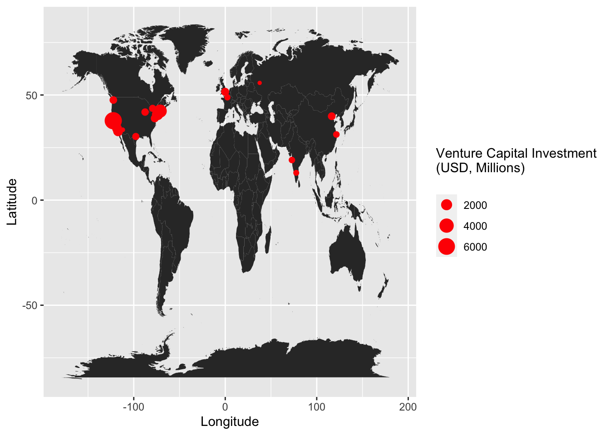
The facet_wrap() function is a layer to iterate (repeat) the entire plot conditional on another variable. It is like the group_by() function in the data grammar.
1.2.4 Returning to the tornado data
We plot the number of tornadoes by year for the state of Kansas. Recall, the data are in the data frame df.
df %>%
filter(ST == "KS") %>%
group_by(Year) %>%
summarize(nT = n()) %>%
ggplot(mapping = aes(x = Year, y = nT)) +
geom_line()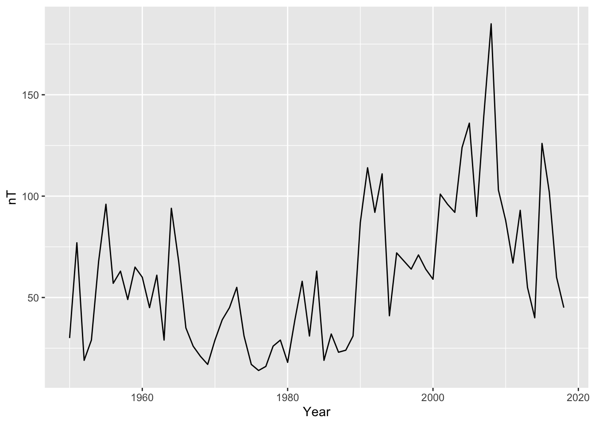
We create a bar chart indicating the number of tornadoes by EF rating since 2007.
df %>%
filter(Year >= 2007, EF != -9) %>%
group_by(EF) %>%
summarize(Count = n()) %>%
ggplot(aes(x = factor(EF), y = Count)) +
geom_bar(stat = "identity")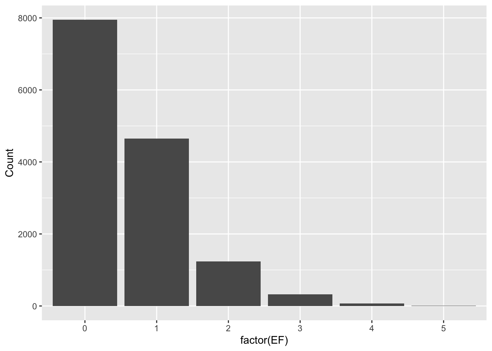
Here the argument stat = "identity" indicates the data are already tabulated. That is, by default geom_bar() tables the data if it is integer, character, or factor.
Improve the bar chart. Make it presentable for publication.
df %>%
filter(Year >= 2007, EF != -9) %>%
group_by(EF) %>%
summarize(Count = n()) %>%
ggplot(aes(x = factor(EF), y = Count, fill = Count)) +
geom_bar(stat = "identity") +
xlab("EF Rating") +
ylab("Number of Tornadoes") +
scale_fill_continuous(low = 'green', high = 'orange') +
geom_text(aes(label = Count), vjust = -.5, size = 3) +
theme_minimal() +
theme(legend.position = 'none') 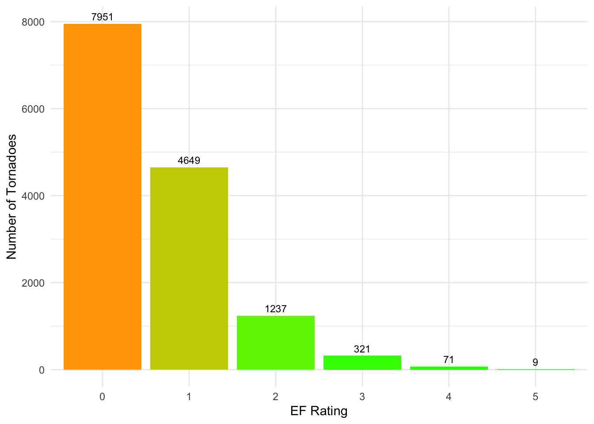
Plot a series of bar charts showing the frequency of tornadoes by EF rating for each year since 2005.
df %>%
filter(Year >= 2005, EF != -9) %>%
ggplot(aes(x = factor(EF))) +
geom_bar() +
facet_wrap(~ Year)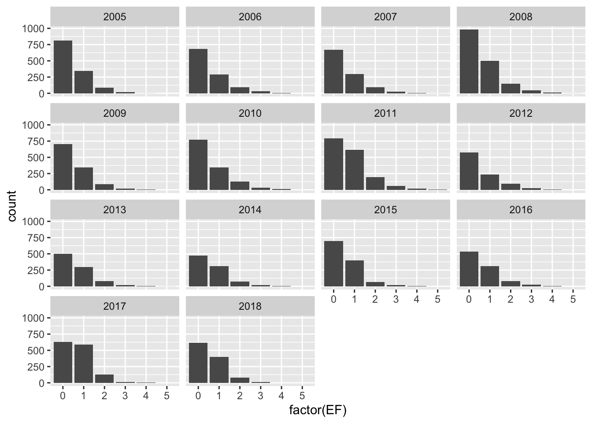
1.2.5 Another example: Hot days in Tallahassee
The data are from the National Climatic Data Center (NCDC). They are daily data from the National Weather Service Forecast Office in Tallahassee. The observing site is the Tallahassee International Airport (previously the Tallahassee Municipal Airport and Tallahassee Regional Airport).
Import the data.
( TLH.df <- read_csv(file = "http://myweb.fsu.edu/jelsner/temp/data/TLH_DailySummary.csv",
na = "-9999") )## Parsed with column specification:
## cols(
## .default = col_logical(),
## STATION = col_character(),
## ELEVATION = col_double(),
## LATITUDE = col_double(),
## LONGITUDE = col_double(),
## DATE = col_double(),
## PRCP = col_double(),
## SNWD = col_double(),
## SNOW = col_double(),
## TMAX = col_double(),
## TMIN = col_double(),
## WSFG = col_double(),
## WT14 = col_double(),
## WT07 = col_double(),
## WT01 = col_double(),
## WT05 = col_double(),
## WT16 = col_double(),
## WT08 = col_double(),
## WT03 = col_double()
## )## See spec(...) for full column specifications.## Warning: 113562 parsing failures.
## row col expected actual file
## 1675 TOBS 1/0/T/F/TRUE/FALSE 267 'http://myweb.fsu.edu/jelsner/temp/data/TLH_DailySummary.csv'
## 1676 TOBS 1/0/T/F/TRUE/FALSE 267 'http://myweb.fsu.edu/jelsner/temp/data/TLH_DailySummary.csv'
## 1677 TOBS 1/0/T/F/TRUE/FALSE 278 'http://myweb.fsu.edu/jelsner/temp/data/TLH_DailySummary.csv'
## 1678 TOBS 1/0/T/F/TRUE/FALSE 289 'http://myweb.fsu.edu/jelsner/temp/data/TLH_DailySummary.csv'
## 1679 TOBS 1/0/T/F/TRUE/FALSE 283 'http://myweb.fsu.edu/jelsner/temp/data/TLH_DailySummary.csv'
## .... .... .................. ...... .............................................................
## See problems(...) for more details.## # A tibble: 24,119 x 48
## STATION ELEVATION LATITUDE LONGITUDE DATE PRCP SNWD SNOW ACMH ACSH
## <chr> <dbl> <dbl> <dbl> <dbl> <dbl> <dbl> <dbl> <lgl> <lgl>
## 1 GHCND:… 21 30.4 -84.3 1.95e7 0 0 0 NA NA
## 2 GHCND:… 21 30.4 -84.3 1.95e7 0 0 0 NA NA
## 3 GHCND:… 21 30.4 -84.3 1.95e7 0 0 0 NA NA
## 4 GHCND:… 21 30.4 -84.3 1.95e7 0 0 0 NA NA
## 5 GHCND:… 21 30.4 -84.3 1.95e7 8 0 0 NA NA
## 6 GHCND:… 21 30.4 -84.3 1.95e7 5 0 0 NA NA
## 7 GHCND:… 21 30.4 -84.3 1.95e7 0 0 0 NA NA
## 8 GHCND:… 21 30.4 -84.3 1.95e7 0 0 0 NA NA
## 9 GHCND:… 21 30.4 -84.3 1.95e7 0 0 0 NA NA
## 10 GHCND:… 21 30.4 -84.3 1.95e7 0 0 0 NA NA
## # … with 24,109 more rows, and 38 more variables: TSUN <lgl>, TMAX <dbl>,
## # TMIN <dbl>, TOBS <lgl>, GAHT <lgl>, FRGT <lgl>, WESD <lgl>, AWND <lgl>,
## # WDF1 <lgl>, WDF2 <lgl>, WDF5 <lgl>, WDFG <lgl>, WSF1 <lgl>, WSF2 <lgl>,
## # WSF5 <lgl>, WSFG <dbl>, PGTM <lgl>, FMTM <lgl>, WT09 <lgl>, WT14 <dbl>,
## # WT07 <dbl>, WT01 <dbl>, WT17 <lgl>, WT06 <lgl>, WT21 <lgl>, WT05 <dbl>,
## # WT02 <lgl>, WT11 <lgl>, WT22 <lgl>, WT04 <lgl>, WT13 <lgl>, WT16 <dbl>,
## # WT08 <dbl>, WT18 <lgl>, WT03 <dbl>, WT10 <lgl>, WT19 <lgl>, WV03 <lgl>The warning concerns the column labeled TOBS. By default the column type is logical but there are cases when the values are numbers. This can be ignored safely.
The variable of interest is the daily high temperature in the column labeled TMAX. The values are in tens of degrees C so the value of 128 is 12.8 C.
Mutate to add new columns giving the temperatures (daily maximum and daily minimum) in degrees F (original measuring unit) and the dates in calendar days. Select only the date and maximum and minimum temperature columns.
TLH.df <- TLH.df %>%
mutate(TmaxF = round(9/5 * TMAX/10 + 32),
TminF = round(9/5 * TMIN/10 + 32),
Date = as.Date(as.character(DATE),
format = "%Y%m%d")) %>%
select(Date, TmaxF, TminF) %>%
glimpse()## Rows: 24,119
## Columns: 3
## $ Date <date> 1948-01-01, 1948-01-02, 1948-01-03, 1948-01-04, 1948-01-05, 19…
## $ TmaxF <dbl> 55, 64, 69, 73, 71, 70, 62, 69, 75, 80, 82, 79, 71, 73, 75, 76,…
## $ TminF <dbl> 32, 31, 50, 62, 65, 44, 34, 35, 43, 48, 52, 53, 53, 48, 51, 54,…Note we again use the as.Date() function (base see ?as.Date). The format in the data file is a concatenation of a four-digit year, a two-digit month, and a two-digit day. Thus the format argument is format = "%Y%m%d").
Q: Is it getting hotter in Tallahassee?
Let’s compute the annual average high temperature and create a time series graph.
We use the year() function from the lubridate package to get a column called Year, the group_by() function to group by Year, and the summarize() function from the dplyr package to get the average daily maximum temperature for each year.
library(lubridate)
df <- TLH.df %>%
mutate(Year = year(Date)) %>%
group_by(Year) %>%
summarize(AvgT = mean(TmaxF)) %>%
glimpse()## Rows: 67
## Columns: 2
## $ Year <dbl> 1948, 1949, 1950, 1951, 1952, 1953, 1954, 1955, 1956, 1957, 1958…
## $ AvgT <dbl> 80.93169, 80.13973, 79.02740, 79.63288, 79.22404, 78.92329, 79.8…We now have a data frame with two columns: Year and AvgT (annual average daily high temperature in degrees F).
We now use the grammar of graphs to make a plot. We specify the x aesthetic as Year and the y aesthetic as the AvgT. We include a point layer and a line layer.
library(ggplot2)
ggplot(df, aes(x = Year, y = AvgT)) +
geom_point(size = 3) +
geom_line() +
ylab("Average Annual Temperature in Tallahassee, FL (F)")## Warning: Removed 1 rows containing missing values (geom_point).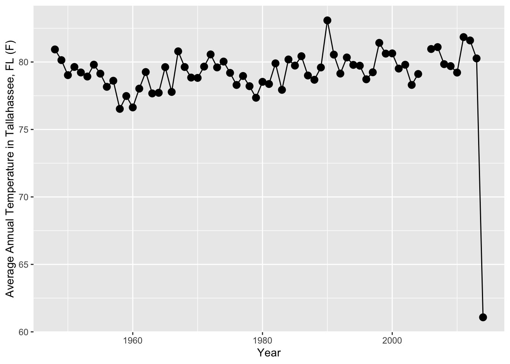
Q: What’s wrong?
Fix and add a trend line layer. Here we go directly to the graph without saving the resulting data frame. That is, we pipe %>% the resulting data frame after applying the dplyr verbs to the ggplot() function. The object in the first argument of the ggplot() function is the result (data frame) from the code above.
TLH.df %>%
mutate(Year = year(Date)) %>%
filter(Year < 2014) %>%
group_by(Year) %>%
summarize(AvgT = mean(TmaxF)) %>%
ggplot(aes(x = Year, y = AvgT)) +
geom_point(size = 3) +
geom_line() +
ylab("Average Annual Temperature in Tallahassee, FL (F)") +
geom_smooth() +
theme_minimal()## `geom_smooth()` using method = 'loess' and formula 'y ~ x'## Warning: Removed 1 rows containing non-finite values (stat_smooth).## Warning: Removed 1 rows containing missing values (geom_point).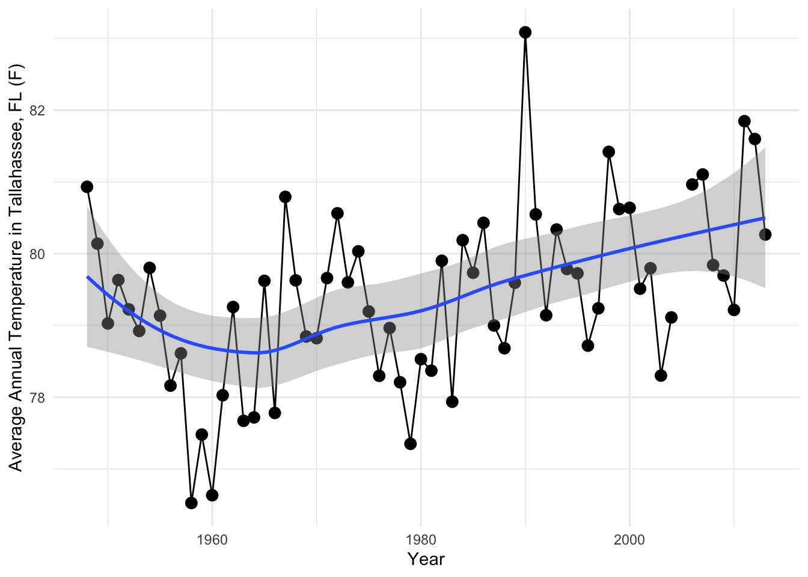
Q: Is the frequency of extremely hot days increasing over time? Let’s consider a daily high temperature of 100 F and above as extremely hot.
Here we count the number of days at or above 100F using the summarize() function together with the sum() function on the logical operator >=. If a day is missing a high temperature, we remove it with the na.rm = TRUE argument in the sum() function.
TLH.df %>%
mutate(Year = year(Date)) %>%
filter(Year < 2014) %>%
group_by(Year) %>%
summarize(N100 = sum(TmaxF >= 100, na.rm = TRUE)) %>%
ggplot(aes(x = Year, y = N100, fill = N100)) +
geom_bar(stat = 'identity') +
scale_fill_continuous(low = 'orange', high = 'red') +
geom_text(aes(label = N100), vjust = 1.5, size = 3) +
scale_x_continuous(breaks = seq(1950, 2013, 10)) +
ylab(expression(paste("Number of days in Tallahassee, FL at or above 100", {}^o, " F"))) +
theme_minimal() +
theme(axis.text.x = element_text(size = 11), legend.position = "none")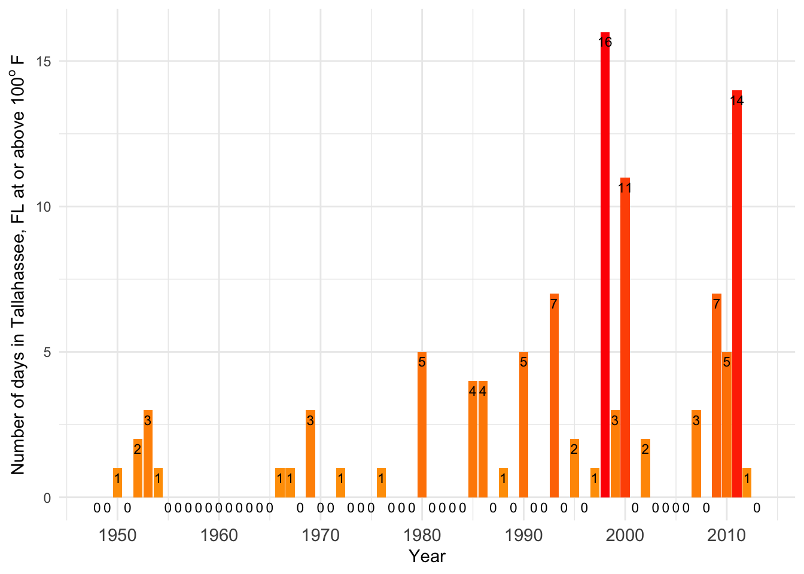
Histogram of daily high temperature.
ggplot(TLH.df, aes(x = TmaxF)) +
geom_histogram(binwidth = 1, aes(fill = ..count..)) +
scale_fill_continuous(low = 'green', high = 'blue') +
ylab("Number of Days") +
xlab(expression(paste("Daily High Temperature in Tallahassee, FL (", {}^o, " F)"))) +
theme_minimal() +
theme(legend.position = "none")## Warning: Removed 1 rows containing non-finite values (stat_bin).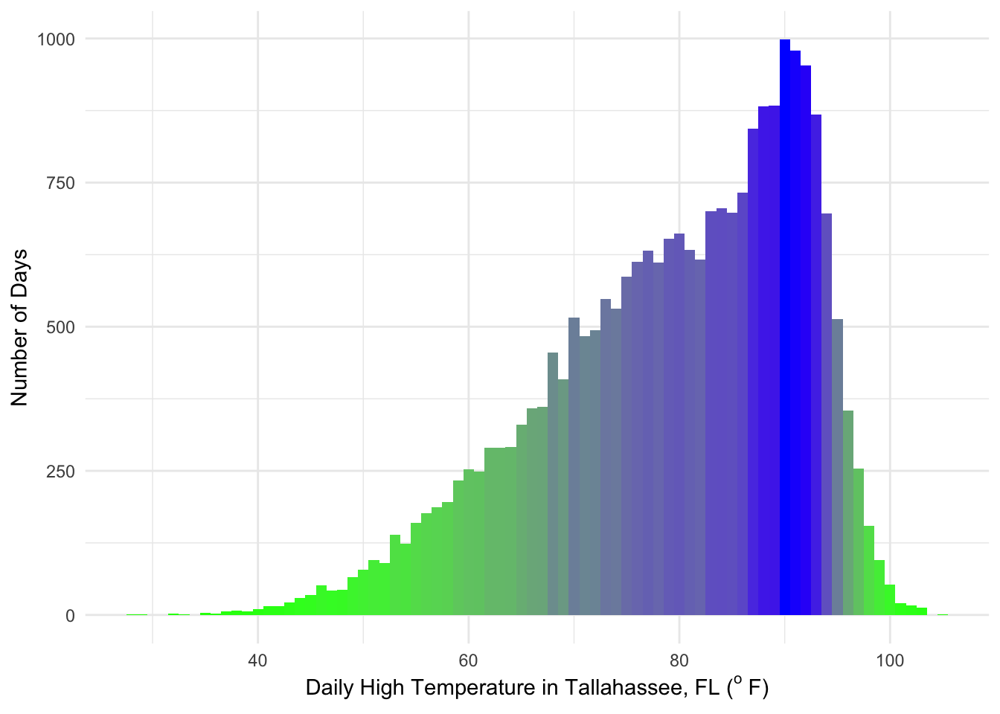
Q: The most common high temperatures are in the low 90s, but there are relatively few 100+ days. Why?
Compare with Las Vegas, Nevada.
( LVG.df <- read_csv(file = "http://myweb.fsu.edu/jelsner/temp/data/LV_DailySummary.csv",
na = "-9999") )## Warning: Duplicated column names deduplicated: 'Measurement Flag' =>
## 'Measurement Flag_1' [13], 'Quality Flag' => 'Quality Flag_1' [14],
## 'Source Flag' => 'Source Flag_1' [15], 'Time of Observation' => 'Time of
## Observation_1' [16]## Parsed with column specification:
## cols(
## STATION = col_character(),
## STATION_NAME = col_character(),
## ELEVATION = col_character(),
## LATITUDE = col_character(),
## LONGITUDE = col_character(),
## DATE = col_double(),
## TMAX = col_double(),
## `Measurement Flag` = col_logical(),
## `Quality Flag` = col_logical(),
## `Source Flag` = col_character(),
## `Time of Observation` = col_double(),
## TMIN = col_double(),
## `Measurement Flag_1` = col_logical(),
## `Quality Flag_1` = col_logical(),
## `Source Flag_1` = col_character(),
## `Time of Observation_1` = col_double()
## )## # A tibble: 23,872 x 16
## STATION STATION_NAME ELEVATION LATITUDE LONGITUDE DATE TMAX
## <chr> <chr> <chr> <chr> <chr> <dbl> <dbl>
## 1 GHCND:… LAS VEGAS M… unknown unknown unknown 1.95e7 406
## 2 GHCND:… LAS VEGAS M… unknown unknown unknown 1.95e7 400
## 3 GHCND:… LAS VEGAS M… unknown unknown unknown 1.95e7 394
## 4 GHCND:… LAS VEGAS M… unknown unknown unknown 1.95e7 411
## 5 GHCND:… LAS VEGAS M… unknown unknown unknown 1.95e7 411
## 6 GHCND:… LAS VEGAS M… unknown unknown unknown 1.95e7 417
## 7 GHCND:… LAS VEGAS M… unknown unknown unknown 1.95e7 422
## 8 GHCND:… LAS VEGAS M… unknown unknown unknown 1.95e7 428
## 9 GHCND:… LAS VEGAS M… unknown unknown unknown 1.95e7 411
## 10 GHCND:… LAS VEGAS M… unknown unknown unknown 1.95e7 394
## # … with 23,862 more rows, and 9 more variables: `Measurement Flag` <lgl>,
## # `Quality Flag` <lgl>, `Source Flag` <chr>, `Time of Observation` <dbl>,
## # TMIN <dbl>, `Measurement Flag_1` <lgl>, `Quality Flag_1` <lgl>, `Source
## # Flag_1` <chr>, `Time of Observation_1` <dbl>LVG.df <- LVG.df %>%
mutate(TmaxF = round(9/5 * TMAX/10 + 32),
TminF = round(9/5 * TMIN/10 + 32),
Date = as.Date(as.character(DATE),
format = "%Y%m%d")) %>%
select(Date, TmaxF, TminF)
ggplot(LVG.df, aes(x = TmaxF)) +
geom_histogram(binwidth = 1, aes(fill = ..count..)) +
scale_fill_continuous(low = 'green', high = 'blue') +
ylab("Number of Days") +
xlab(expression(paste("Daily High Temperature in Las Vegas, NV (", {}^o, " F)"))) +
theme_minimal() +
theme(legend.position = "none")
- https://exts.ggplot2.tidyverse.org/
- Cheat sheets: https://rstudio.com/resources/cheatsheets/
- More examples: https://geocompr.robinlovelace.net/ spData package.
1.3 Problem Set 1
Due Date:
The object us_states from the spData package is a simple feature data frame from the U.S. Census Bureau. The variables include the name, region, area, and population.
- Create a new data frame from
us_statescontaining only the population information. (10) - Create a new data frame from
us_statescontaining only states from the South region. (10) - Create a new data framefrom
us_statescontaining only states from the West region having area less then 250,000 square km and a 2015 population more than 5,000,000 residents. Hint: you will need to useas.numeric(AREA)to remove the units. (10) - What was the total population of the Midwest region in 2010 and 2015? (20)
- How many states are in each region? (20)
- Make a bar chart showing the total area in millions of square kilometers by region. Hint: include
stat = "identity"in thegeom_bar()function. (25) - How much has population density changed between 2010 and 2015 in each state? Calculate the change (in percent relative to population in 2010) for each state. (5)
Extra problem: Make a side-by-side comparison using facet_wrap(). Convective vs non-convecting atmospheres.
References
Wickham, Hadley, Romain François, Lionel Henry, and Kirill Müller. 2020. Dplyr: A Grammar of Data Manipulation. https://CRAN.R-project.org/package=dplyr.